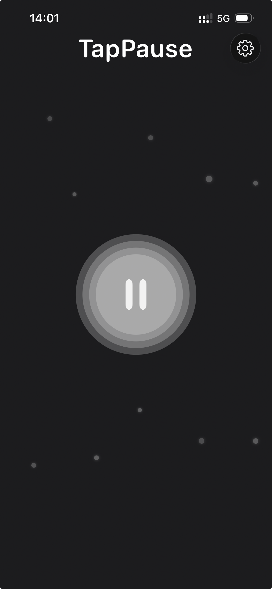

Simple Ways to Pause During a Busy Workday
February 28, 2026
Busy days don’t usually collapse dramatically. They accumulate. Email by email. Meeting by meeting. Notification by notification. Accumulated workplace stress is often the result of small, ignored moments of tension — especially when working from home. Before you realize it, you haven’t stopped all day. Here are simple ways to get a mental reset at work and practice mindful productivity without disrupting your workflow.
Three ways to pause during a busy workday
1. Micro-pauses between tasks
Instead of jumping directly from one task to the next, insert a 1–3 minute gap. Stand up. Look away from your screen. Let your mind settle. Short pauses are more sustainable than long ones.
2. Scheduled stillness
Set one intentional pause during your day. Not a meeting. Not a task. Just time. Even 5 minutes can reset your mental rhythm.
3. Use a single-purpose pause app
Most timer apps come with distractions: settings, stats, notifications. A single-purpose pause tool removes that friction. TapPause was designed as a minimal pause app for iOS. One button. Custom pause durations. No tracking or data collection. It’s not a productivity tool. It’s a reset point.

Pausing doesn’t make you less productive. It makes your work less reactive. Sometimes the most effective action is a deliberate moment of stillness. For more on taking short breaks without quitting your apps, see how to take a break from your phone.
TapPause is a minimal pause app for iPhone. No tracking. No pressure. Just a quiet moment.